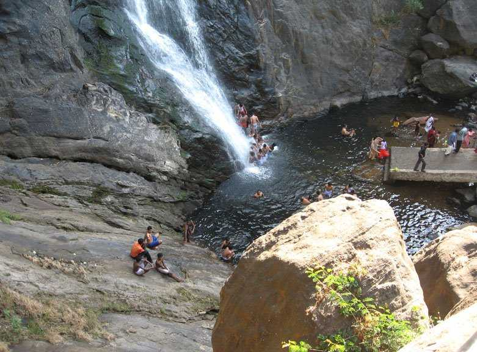
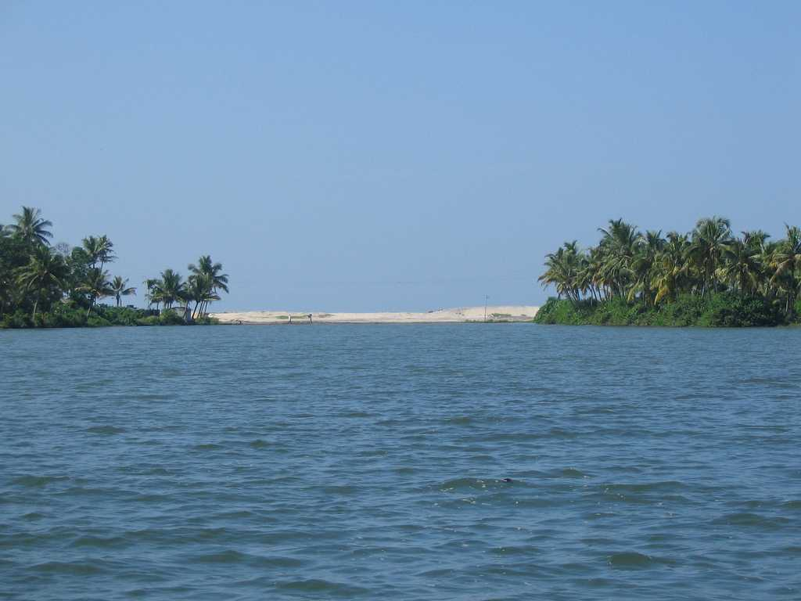

JATAYU EARTH'S CENTER
Jatayu Nature Park is a rock-themed park under construction at Chandamalayam in Kollam district of Kerala, all set to open in August 2017.
EXPLORE

PALARUVI WATERFALLS
A gorgeous waterfall located on the Kollam-Shencottah Road at Palaruvi is lying at an altitude of 300 feet; the ideal time to enjoy the freshness of the waterfall is from June to January.
EXPLORE
PUNALUR
e town's name translates into 'town of water', the river Kallada flows through the city of Punalur. This town is also known as the 'lap of the Western Ghats' because of its serene natural beauty.
EXPLORE

ASHTAMUDI LAKE
Ashtamudi Lake located in the Kollam District of the Indian state of Kerala, is the most visited backwater and lake in the state.
EXPLOREEXPLORE MORE